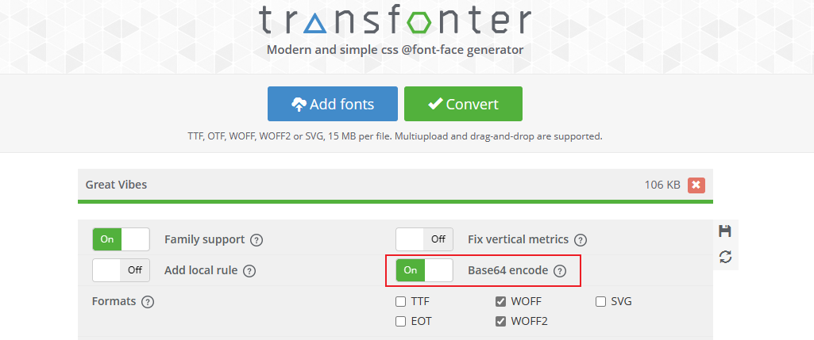
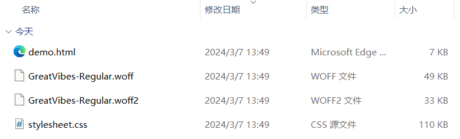

素材准备 Preparation
- 大树小站 - 提供的在线字体
- 个人学习通资料区下载字体文件压缩包：Great_Vibes 和 Roboto
- 自行准备喜欢的字体文件，如 谷歌字体
字体效果 Effect
- Great_Vibes 0123456789
- Michroma 0123456789
- Poppins 0123456789
- Quicksand 0123456789
- Roboto 0123456789
- FlappyBird 0123456789
- CruiserFortressBevel 0123456789
- YuWei 0123456789 社会主义核心价值观
本地使用 Local - 不推荐
. 将字体文件转换成小程序可以识别的格式，再导入到项目中
. 特点：加载快，渲染速度也快；但是会增加项目的体积
[] 字体转换 - 以Great_Vibes 为例
- 下载 Great_Vibes 到本地并解压，得到字体文件 GreatVibes-Regular.ttf；默认情况下，字体不支持 base64，需要转码
- 打开 转码 transfonter，上传字体文件 Add fonts，勾选 base64 编码，单击转换 Convert 开始转换

- 转换完毕，单击下载 download，得到字体文件压缩包，解压后如下图；拷贝样式文件到小程序，修改文件后缀名为.wxss

- 在小程序中，查看字体样式文件：定制了字体家族：Great Vibes
@font-face {
font-family: 'Great Vibes';
src: url('.....');
}
在小程序样式中引入字体样式文件并使用；并根据需要指定其它属性，如字体略小，设置为20px
@import '../../utils/transfonter.org-20240229-142749/stylesheet.wxss';
text{
font-family: 'Great Vibes';
font-size: 20px;
}
在线使用 Online - 推荐
- 将字体文件放在资源服务器上，提供给项目在线使用
- 在小程序中定制字体，从资源服务器上获取字体文件
- 特点：不占用小程序体积；但是速度略慢，特别是中文字体
- 使用在线字体，需要将其域名加入到request合法域名中
- 在线使用会提示：[渲染层网络层错误] Failed to load font http://127.0.0.1:3000/font/GreatVibes-Regular.ttf
net::ERR_CACHE_MISS ；可以忽略
[] 自定义字体
- 只有一个字体文件 - 以 GreatVibes 为例
@font-face {
font-family: 'Great_Vibes';
src: url(https://glpla.github.io/utils/font/Great_Vibes/GreatVibes-Regular.ttf);
}
多个类型的字体文件，分别设置 - 以 Roboto 字体为例，添加了可选的格式类型 truetype
@font-face {
font-family: 'Roboto';
font-style: normal;
font-weight: 300;
src: url(https://glpla.github.io/utils/font/Roboto/Roboto-Light.ttf);
}
@font-face {
font-family: 'Roboto';
font-style: normal;
font-weight: 400;
src: url(https://glpla.github.io/utils/font/Roboto/Roboto-Regular.ttf);
}
@font-face {
font-family: 'Roboto';
font-style: normal;
font-weight: 600;
src: url(https://glpla.github.io/utils/font/Roboto/Roboto-Bold.ttf);
}
@font-face {
font-family: 'Roboto';
font-style: italic;
font-weight: 400;
src: url(https://glpla.github.io/utils/font/Roboto/Roboto-Italic.ttf);
}